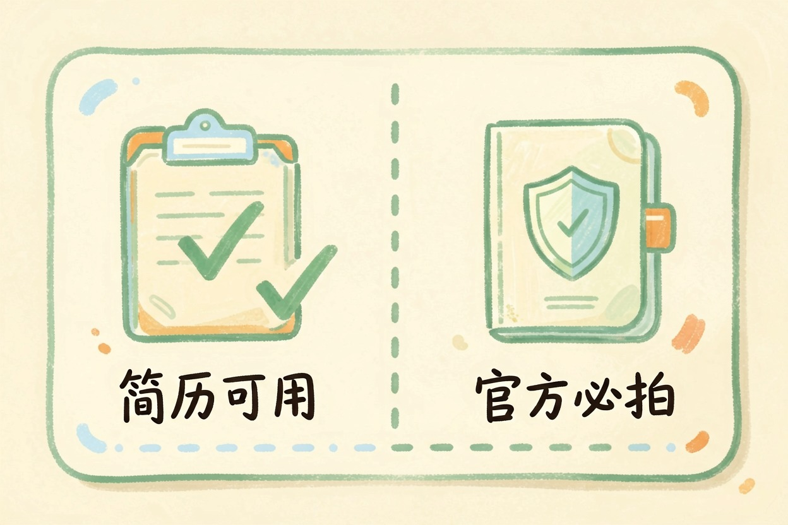
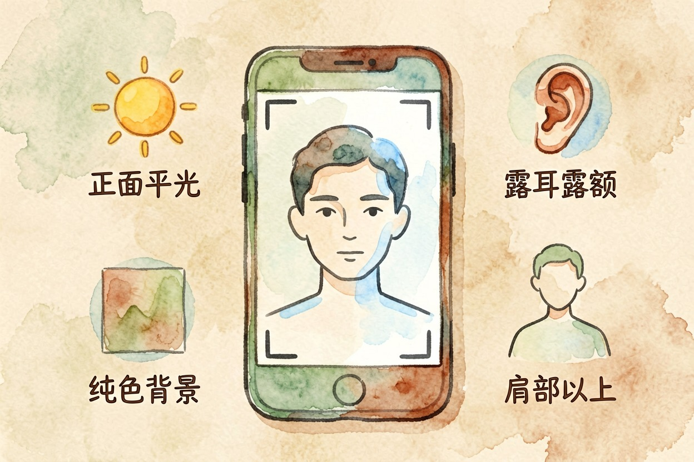
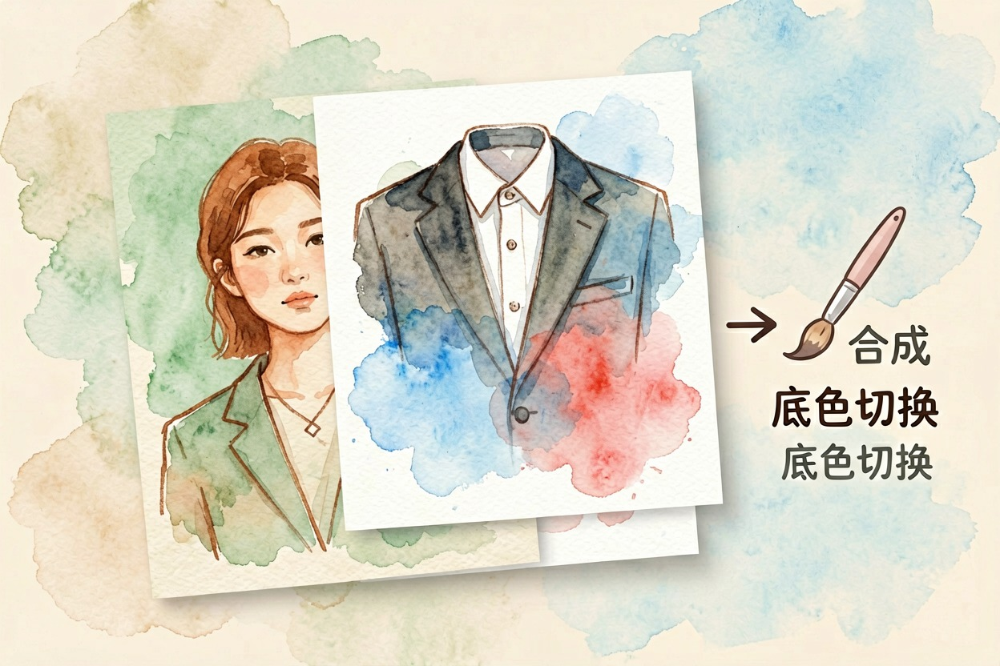
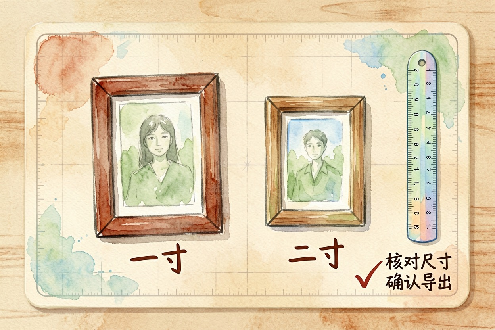

用 AI 做证件照：换底色和正装
AI 证件照有边界：简历、电子报名能用，护照、身份证等官方证件必须现场拍。步骤只有三步：自拍、换底、选尺寸。
ai做证件照前先分清：哪些能做，哪些必须现场拍

ai做证件照有明确的边界：有的场景能用，有的必须现场拍。简历、电子报名、工牌照片用 AI 没问题：自拍一张，AI 换底色、换正装、裁尺寸，几分钟导出。护照、身份证、签证、驾考照片，必须现场拍或到指定照相馆。官方采集有严格标准，AI 生成的不符合，审核一定拒。
这个边界，是内容农场不写的部分。它们只教你怎么换，不告诉你哪些不能换。同事小陈用 AI 证件照交简历，一次过。另一个朋友想用 AI 换脸办签证，被窗口退了回来。
关键要点 - 简历、电子报名、工牌可用 AI 证件照- 护照、身份证、签证、驾考必须现场拍- 原图决定上限：正面平光、无美颜、露耳露额- 「AI 生成身份证」类页面全是骗局，别信
第一步：拍一张合格的自拍

ai做证件照的第一课，是拍好原图。AI 只是锦上添花，原图决定上限。拍的时候找正面平光，别用顶光和逆光。
关掉美颜，露耳露额，头发别挡脸。背后用纯色墙或白布，避免杂色。手机后置摄像头、胸口以上构图，够用。
拍原图是 ai做证件照最容易偷懒、也最不该偷懒的一步。
用下面这张清单自查：
□ 正面平光，脸上没有明显阴影
□ 美颜已关闭，五官不变形
□ 双耳和额头完整露出
□ 背景纯色，无杂物
□ 肩部以上构图，眼睛平视镜头第二步：AI 换底色和正装

ai做证件照的操作大同小异。入口分三类：手机小程序、美图秀秀类 App、在线网页。上传自拍，选底色（白、蓝、红），选正装模板，AI 自动合成，导出照片。免费额度各工具不同，以工具内当前说明为准（美图秀秀官网{:target="_blank"}）。
国内工具里，即梦 AI 的出图能力在生成人像时表现稳定。换装后检查手指和衣领，AI 偶尔会画崩，修法可以参考AI 生成人像手部崩坏的修法。想要更多免费工具，翻一遍免费 AI 图像工具盘点。
第三步：选尺寸导出

尺寸是 ai做证件照最容易出错的一步。按国标写死，常见规格如下：
| 用途 | 尺寸 |
|---|---|
| 一寸 | 25×35mm |
| 二寸 | 35×49mm |
| 护照/签证 | 以官方要求为准 |
护照、签证照片常见规格略有差异，报名系统一般会写清楚要求。电子版看像素，打印版看分辨率。具体标准可参考国家标准相关说明（中国政府网{:target="_blank"}）。
导出前确认底色和尺寸符合要求，别等上传了才发现不对。一张照片多花两分钟检查，能省一整天重拍的麻烦。
隐私和审核提醒
人脸是敏感生物信息。优先选「处理完即删」或本地处理的工具，别给要求相册全量授权、还要实名的工具。ai做证件照的隐私问题，比省几块钱重要。
也别过度美颜和换脸。审核系统会比对原图，AI 味太重的报名照大概率被拒。重要证件别省这几块钱，去正规照相馆更稳。网上一键生成身份证、AI 办理护照的页面全是骗局，别信。
别用 AI 换脸做报名照。人脸信息一旦泄露，比一张照片贵得多。ai做证件照要守住边界：能做的做好，不能做的交给线下。
本文信息核对于 2026-08-06。AI 产品的价格、免费额度与功能变动频繁，实际以各工具官网当前说明为准。